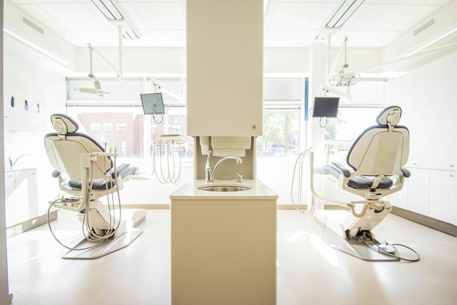

01
Implant
Yo'qolgan tish o'rniga titan vint o'rnatiladi, ustiga tabiiy ko'rinishdagi koronka qo'yiladi.
- Tekshiruv va reja
- Implant o'rnatish
- Koronka
Xirurg stomatolog · IIV Stomatologiya poliklinikasi

Shifokor haqida
Dr. Xayot — xirurg stomatolog. Sakkiz yil davomida tish sug'urish, davolash va protezlash bilan shug'ullanadi. Maqsad oddiy: aniq tashxis, og'riqsiz davolash va siz tabassum qilishdan tortinmaydigan natija.
Xizmatlar
Yo'qolgan tish o'rniga titan vint o'rnatiladi, ustiga tabiiy ko'rinishdagi koronka qo'yiladi.
Kariesli qism tozalanadi, kovak maxsus material bilan to'ldirilib, nur bilan qotiriladi.
Ultratovush bilan tish toshi va karash olinadi, tishlar silliq va toza bo'ladi.
Mahalliy og'riqsizlantirishdan so'ng tish ehtiyotkorlik bilan chiqariladi.
Yo'qolgan yoki shikastlangan tishlar o'rniga qulay va chiroyli qoplama o'rnatiladi.
Maxsus gel va yorug'lik yordamida tishlar bir necha tonga ochiladi.
Animatsiyalar umumiy tushuntirish uchun. Aniq davolash rejasi shifokor ko'rigidan so'ng belgilanadi.
Tabassum tajribasi
Slayderni suring: sarg'ish tishlar professional tozalash va oqartirishdan keyin qanday tovlanishini ko'ring.
Namoyish: bitta real fotosurat, tish rangi ishlov berilgan. Haqiqiy natija tish holatiga bog'liq.


Interaktiv tashxis
Tishdagi nuqtalarni bosing — eng ko'p uchraydigan holatlar va ularning belgilari bilan tanishing.
Emal yemirilishidan boshlanadi. Dastlab qora dog' yoki shirinlikka sezgirlik bo'lishi mumkin. Erta davolansa, tishni to'liq saqlab qolish oson.
Bu umumiy ma'lumot, tashxis emas. Aniq tashxis uchun shifokorga ko'rining.Jarayon
Qo'ng'iroq qiling yoki Telegram orqali yozing — qulay vaqtni birga tanlaymiz.
Holatni ko'rib chiqamiz, kerak bo'lsa rentgen qilamiz va muammoni tushuntirib beramiz.
Reja kelishilgach, qulay va og'riqsiz davolash boshlanadi.
Tiklanish va kundalik gigiena bo'yicha aniq tavsiyalar olasiz.



Foydali odatlar
Savollar
Jarayon mahalliy og'riqsizlantirish ostida o'tadi, shuning uchun og'riq sezilmaydi. Shifokor har bir bosqichni oldindan tushuntiradi.
+998 99 840 14 48 raqamiga qo'ng'iroq qiling yoki Telegram orqali yozing. Telegramda tish bo'yicha bepul maslahat ham beriladi.
Odatda professional tozalash yiliga 1–2 marta tavsiya etiladi. Aniq muddatni shifokor holatingizga qarab aytadi.
Bu gingivit yoki parodontit belgisi bo'lishi mumkin. Bunday holda kechiktirmay shifokorga murojaat qilish kerak.
Qabul uchun yoziling
Ma'lumotlaringizni qoldiring — Telegram orqali shifokorga tayyor xabar yuboriladi.